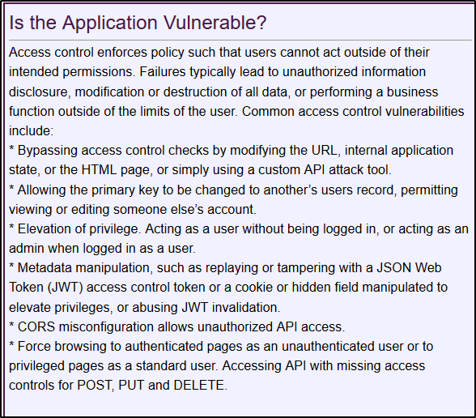

5) Broken Access Control
https://owasp.org/www-project-top-ten/OWASP_Top_Ten_2017/Top_10-2017_A5-Broken_Access_Control
As a high level summary: the user get access where they shouldn't.
As an example, someone that can access to the "/admin" folder of the website
or
viewing other people info with like "/id=1" to the URL (Insecure Direct Object Reference)
